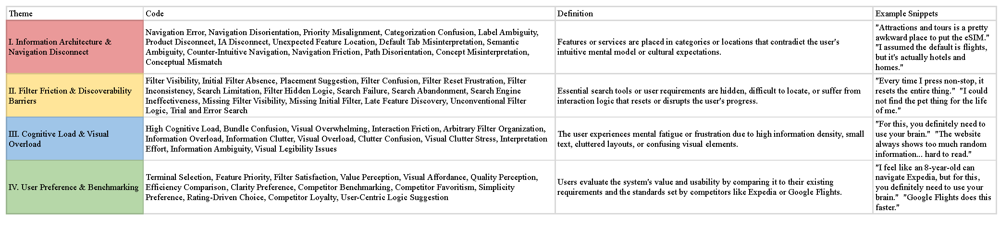
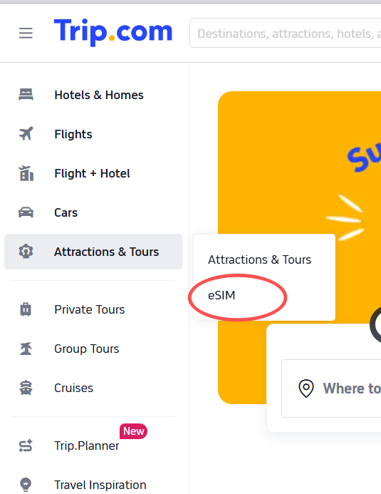
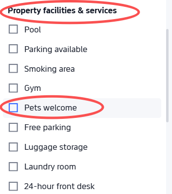
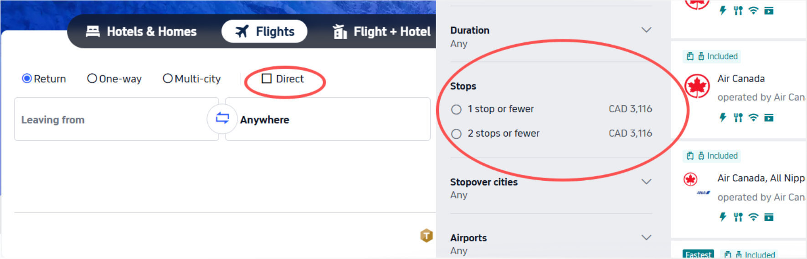
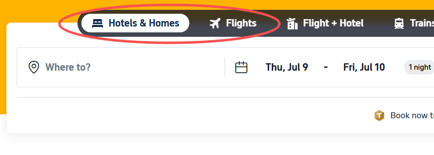
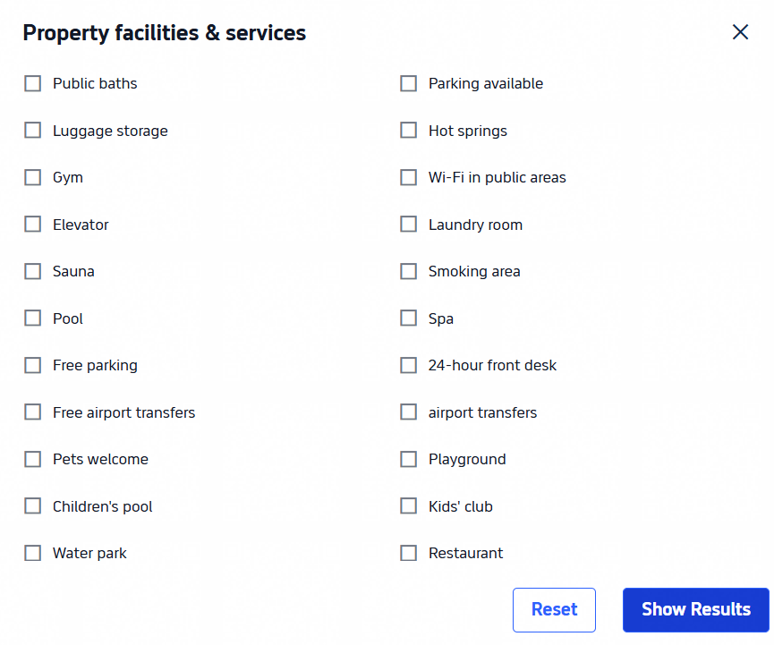
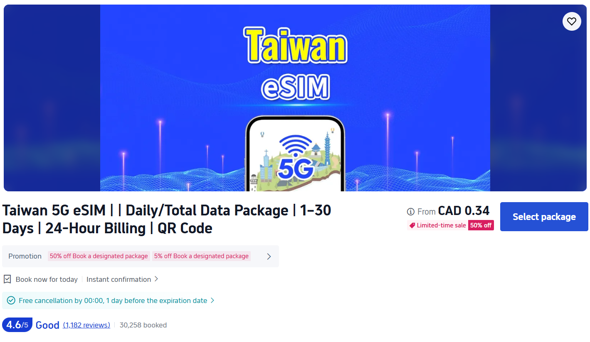

Trip.com packs a lot into one platform, flights, hotels, and add-ons like eSIMs, all in a single interface. But as user of the platform myself, I kept running into the same problem: the site feels cluttered.
Therefore, I built the study to find out where that clutter actually breaks down for real users.
The study consist of a total of three tasks, each task came with a fixed scenario and a success criterion.
| Task | Constraint | Success criteria |
|---|---|---|
| Flight Search · Toronto → Beijing | Non-stop, fixed dates, free baggage | Reach checkout for the cheapest qualifying fare |
| Hotel Booking · New York | Pet-friendly, 4+ stars, rating over 8.5 | Reach checkout for a hotel meeting all criteria |
| eSIM Purchase · Mainland China | 5+ days, 2GB+ data | Reach checkout for a qualifying eSIM plan |
I moderated every session in person, reading each scenario aloud, prompting participants to think out loud, and staying neutral, intervening only to clarify a task requirement, never to guide. Two note-takers logged behavior and errors, a timer tracked clicks and time on task, and every session was recorded over Zoom for later review.
| Attribute | Profile |
|---|---|
| Age range | 6 participants, 20–30+, mostly 20–25 |
| Booking frequency | 5 of 6 book travel a few times a year |
| Trip.com familiarity | Evenly split, first-time vs. returning users |
After the sessions, I coded every transcript line by line, tagging quotes with descriptive codes and grouping them into four themes: Information Architecture & Navigation Disconnect, Filter Friction & Discoverability Barriers, Cognitive Load & Visual Overload, and User Preference & Benchmarking. This pass is what turned six sets of session notes into a defensible, severity-ranked list of findings instead of a pile of complaints.

Coding pass. Every quote tagged with a code, then grouped into one of four themes.
Task completion looked strong on its own. It's the SUS score that shows what that completion actually cost people.
| Task | Success rate | Note |
|---|---|---|
| Flight Search | 100% (6/6) | Completed, but slowed by filter confusion |
| Hotel Booking | 83.3% (5/6) | One participant unable to fully complete |
| eSIM Purchase | 100% (6/6) | Most relied on search rather than navigation |
The overall SUS score came in at 66.25 out of 100, just under the 68-point average-usability benchmark, the "marginally acceptable" range. People could learn the site and get things done, but it never became easy. The lowest-scoring items were complexity and inconsistency, the same themes the coding pass had already surfaced independently.
The transcripts explain the gap between a high completion rate and a below-benchmark SUS score. These are the six issues the coding surfaced, ranked by how much they blocked or slowed task completion.
| Issue | Severity | Participants affected |
|---|---|---|
| eSIM entry point buried under "Attractions & Tours" | Critical | 6 of 6 |
| Pet-friendly filter hidden in a collapsed section | Critical | 5 of 6 |
| Non-stop filter split across two inconsistent locations | Major | 4 of 6 |
| Booking tabs visually indistinguishable, wrong-tab errors | Major | 3 of 6 |
| Terminology mismatches how users categorize features | Moderate | 5 of 6 |
| eSIM product page lacks structured comparison | Moderate | 3 of 6 |
Every write-up below traces back to specific quotes and behaviors from the sessions, not a general impression of the interface.

All six participants struggled to find the eSIM feature, which sits under "Attractions & Tours." A data plan has nothing to do with sightseeing, and participants said so directly: "If I didn't know they provide eSIMs, I wouldn't explore it." Five of six rated this the hardest task. Recommendation: move eSIM into a dedicated "Travel Essentials" category with a visible homepage entry point.

Five of six participants, including three self-identified frequent travel bookers, couldn't find the pet-friendly filter without help. It's nested inside a collapsed "Property Facilities and Services" section, a category people associate with amenities, not travel companions. Recommendation: promote "Pet-friendly" to a top-level filter and add a "Traveling with pets" toggle in the initial search form.

The sidebar filter only offers "1 stop or fewer," with no explicit non-stop option, while a separate toggle at the top of the page does the same job. One participant assumed the option simply didn't exist. Recommendation: consolidate into a single filter system with an explicit "Non-stop (0 stops)" option.

Three participants started entering flight details into the hotel search tab without noticing, including two who had used Trip.com before. Prior familiarity didn't prevent the error. Recommendation: strengthen contrast on the active tab and add a contextual heading above the search form.

Across all three tasks, five participants hit labels that didn't match their mental model, from "1 stop or fewer" to "Property Facilities and Services" grouping pet policy in with barbecue amenities. None of these blocked completion, but each one added hesitation. Recommendation: standardize terminology to match how users actually categorize features.

Data allowance, duration, and price aren't shown until a user opens an individual eSIM listing. One participant called the section "lazily done compared to the rest of the website." Recommendation: surface key attributes at the listing level and allow side-by-side comparison.
The study produced six findings, each traceable to specific transcript evidence, a full evaluation report, and a client-style set of prioritized recommendations. Every participant completed the eSIM and flight tasks, and yet every participant also independently criticized the same handful of design decisions, which told us the completion rate alone was hiding the real story.
Moderating all six sessions myself taught me how much unspoken friction lives underneath a "successful" task. People will work around a bad filter, backtrack out of the wrong tab, or fall back on the search bar rather than fail outright, and none of that shows up if you only track completion rate. Coding my own transcripts also sharpened how I build a case for a finding: a single frustrated comment is an anecdote, but the same complaint from five of six participants, tied to a specific screen, is a finding a team can act on.